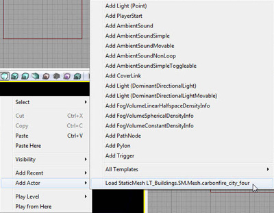
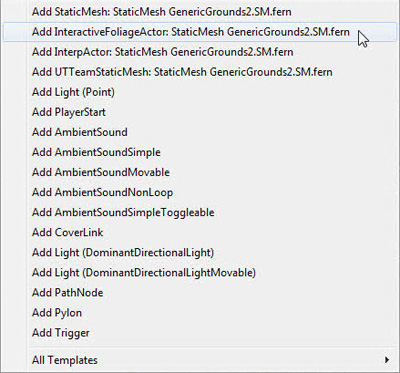
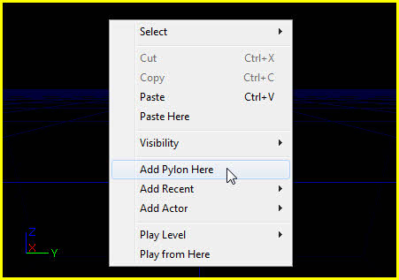
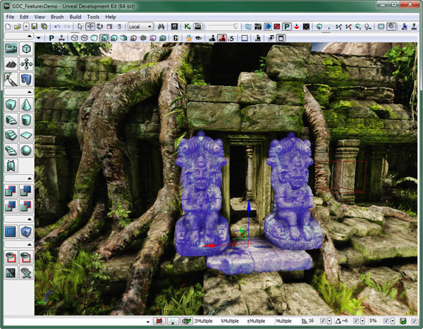
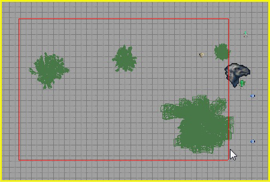
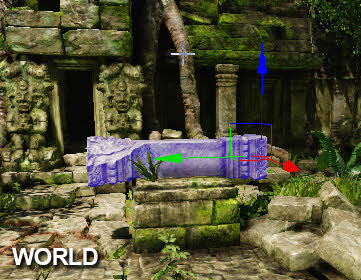
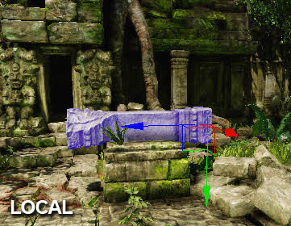

UDN
Search public documentation:
LevelEditorUserGuideCH
English Translation
日本語訳
한국어
Interested in the Unreal Engine?
Visit the Unreal Technology site.
Looking for jobs and company info?
Check out the Epic games site.
Questions about support via UDN?
Contact the UDN Staff
日本語訳
한국어
Interested in the Unreal Engine?
Visit the Unreal Technology site.
Looking for jobs and company info?
Check out the Epic games site.
Questions about support via UDN?
Contact the UDN Staff
关卡编辑器用户指南
文档概要：关卡编辑器用户指南。 文档变更记录:由 Jeff Wilson 创建并更新。简介
虚幻关卡编辑器是UnrealEd中的核心编辑器。游戏世界中的关卡都是在这个编辑器中创建的 – 无论是BSP、静态网格几何体还是地形构建的关卡。它们可以包含光源、其它Actors、人工智能路径节点及脚本序列。 本文档对关卡编辑器界面及如何应用它来创建关卡进行了概述。使用关卡编辑器
这部分介绍了关于打开编辑器及创建基本关卡步骤方面的基础知识。打开编辑器
当您打开UnrealEd时，关卡编辑器也随之打开了。请参照打开虚幻编辑器?页面获得关于如何打开虚幻编辑器的更多细节。创建关卡
在您开始尝试深入了解关卡编辑器中提供的每个单独的菜单、按钮、工具及命令之前，先看一下逐步创建简单关卡的步骤相信会对你大有裨益。关于创建一个简单关卡的入门介绍，请参照创建关卡页面。关卡编辑器概述
这部分对构成编辑器界面的组件、用于操作和导航视口的控件及一些可以高效地完成任务的常用专用按键进行了简单介绍。编辑器界面
关卡编辑器本身分为以下几个部分：
- 菜单条
- 工具条
- 工具箱
- 视口
- 状态栏
菜单条
关卡编辑器的主菜单对于每个曾经使用过Windows应用程序的人应该都是很熟悉的。它提供了在使用虚幻编辑器创建关卡过程中需要用到大量的工具和命令。 关于菜单条的更多信息，请参照编辑器菜单条页面。工具条
和大部分应用程序一样，工具条中提供了一组快速访问常用工具和命令的快捷访问方式。很多关卡编辑器菜单中的条目也可以在工具条按钮中找到。 关于工具条的更多信息，请参照 编辑器工具条页面。工具箱
工具箱中是一组控制编辑器当前所处模式的工具，可以重新构建画刷形状、创建新的BSP几何体和体积、及控制视口中actor的可见性和选中状态。 关于工具箱的更多信息，请参照 编辑器工具箱页面。视口
关卡编辑器视口是您进入到您在虚幻编辑器中创建的世界的窗口。提供了多个正交视图(顶视口、侧视口、前视口)和一个透视图，您可以完全地控制您所看到的世界及查看方式。 关于虚幻编辑器中视口工具条的更多信息，请参照视口工具条页面。 关于编辑器中各种视图模式的列表，请参照视图模式页面。 关于编辑器中各种 Show Flags(显示标志)的列表，请参照 显示标志页面。控制
从长远角度来讲，知道视口导航控制、键盘控制和热键可以帮助您加快工作流程并节约时间。鼠标控制
关于鼠标控制的列表，请参照编辑器按钮页面。键盘控制
关于一系列的键盘控制信息，请参照编辑器按钮页面热键
关于如何绑定编辑器热键并创建新的编辑器热键命令的概要，请参照编辑器热键页面设置关卡
关卡创建过程分为几个完整的任务：放置actor、选择actor、变换actor、修改actor。换句话说，要想创建关卡，将需要把actors放到地图中、到处移动他来创建环境、然后要修改它们的属性，以便使它们的外观和行为是正确的。放置Actors
每个地图刚开始时都是个空白的板面。要想构建期望的环境或者布置世界，就必须把actors放置到地图中。这个过程可以通过几种不同的方法来实现，但是它们都会导致创建某个类的新实例，然后可以到处移动该实例或者修改它们的属性。 以下详述了把新actor放置到地图中的不同方法。从内容浏览器中进行放置
可以在内容浏览器中选择某些类型的资源，然后通过右击其中一个视口并选择“Add Actor(添加Actor) >”来把它分配给适当类型actor的新实例。这将会显示卷帘菜单，包含了使用选中资源可以添加的可能的actor类型。 如果当前没有加载资源，那么将会在卷帘菜单的底部出现加载资源选项。选择这个选项将会加载资源并在卷帘菜单上显示要加载的actor类型选项。
如果当前没有加载资源，那么将会在卷帘菜单的底部出现加载资源选项。选择这个选项将会加载资源并在卷帘菜单上显示要加载的actor类型选项。


可以从内容浏览器中将其放置到地图内的资源类型有：- Static Meshes（静态网格物体）
- Skeletal Meshes(骨架网格物体)
- Physics Assets(物理资源)
- Fractured Static Meshes(破裂的静态网格物体)
- Particle System(粒子系统)
- Speed Trees
- Sound Cue(音效)
- Sound Wave(声音波形)
- Lens Flare(镜头眩光)
拖拽放置
除了通过视口关联菜单从内容浏览器内将特定的类型的actor添加到地图中外，也可以通过从内容浏览器中简单地拖拽资源并将其放置到视口中您想放置actor的地方来实现。当这样做时，鼠标将会改变，以便您知道您正在拖拽放置到视口中的资源类型。 当从内容浏览器中拖放资源时，将会为相关类型的资源创建以下类型的actors：
当从内容浏览器中拖放资源时，将会为相关类型的资源创建以下类型的actors：
- Static Meshes（静态网格物体） -放置一个StaticMeshActor。
- Skeletal Meshes(骨架网格物体) – 放置一个SkeletalMeshActor。
- Physics Assets(物理资源) – 放置一个KAsset。
- Fractured Static Meshes(破裂的静态网格物体) – 放置一个FracturedStaticMeshActor。
- Particle System(物理系统) – 放置一个发射器。
- Speed Trees – 放置一个SpeedTreeActor。
- Sound Cue(声效) – 放置一个AmbientSound。
- Sound Wave(声音波形) –放置一个AmbientSoundSimple。
- Lens Flare(镜头眩光) – 放置一个LensFlareSource。
从Actor浏览器中进行放置
尽管拖拽放置actor是个非常简单高效的方法，但是它仅对特定的actor类型有效。然而，任何类型的可放置actor（在Actor浏览器中显示为粗体的对象）都可以通过在Actor浏览器中选择一类actor并右击其中一个视口然后选择“Add New
某些类型的actor可能也需要在内容浏览器中选中某种特定类型的资源才能把它们放置到关卡中。这些actor一般和刚开始讲的通过内容浏览器简单地将其放置到地图中的actor是同一种类型。如果在内容浏览器中没有选中正确类型的资源，那么将会显示一个信息通知用户。

选择Actors
尽管选择actor操作从本质上来说非常简单，但是在关卡编辑过程中这是非常重要的一部分。如果您不能快速地选择正确的actor组，那么整个过程将会减慢，效率降低。有很多种选择actor或actor组的方法。以下对这些方法进行了详细介绍。简单的选择
选择actor的最基本的方法是简单地在视口中左击它们。每次左击一个actor时将会取消选中当前的actor或者选择一个新actor。如果在左击新actor的同时按下Ctrl键，那么新actor将会被添加到选中项中。
通过这种方法，您可以选择多个actor，然后可以把它们作为一个组移动，或者可以在属性窗口中修改所有选中的actor的共有属性。这个方法对于选择少量的actor或者几个散布在关卡中的独立的actor是非常有用的，但是当要选择大量actor时这个方法的速度就会变慢而且非常麻烦。方框区域选择
方框区域选择是快速选中或取消选中某个特定区域中的一组actors的方法。这种选择类型涉及到按下组合键、点击其中一个鼠标按钮并拖拽光标来创建一个方框。根据所按下的组合按键及鼠标按钮的不同，将会选中或取消选中方框内的actor。
可能的组合及其它们的作用：- Ctrl + Alt + LMB – 使用方框内包含的actor替换当前选中的actor。
- Ctrl + Alt + Shift + LMB – 将方框内包含的actor添加到当前的选中项内。
- Ctrl + Alt + Shift + RMB – 选中项内删除方框内选中的任何actor。
按类别选择 / 按资源选择 /按属性选择
这些选择方式允许您根据actor的类别、特定资源的应用或者具有某个特定值的属性来选择一组actor。这将要求已经选中了一个actor（当按照类别或资源选择时）或者已经激活了某个属性和值。这些选择可以通过视口关联菜单来实现。
变换Actors
变换actors是指移动、旋转或者缩放actors。毫无疑问这个过程在关卡编辑过程中占很大一部分。在关卡编辑器中有两种变换actors的基本方法。手动变换
第一种方法是手动地在属性窗口中改变属性的值。在属性窗口的Movement部分(位置和旋转)及Display部分(Draw Scale和Draw Scale 3D)下访问任何actor的所有重要的变换属性。尽管这确实给使您可以对位置、旋转及actor大小进行精确的控制，但是这并不直观，并且在不断修改值的过程中会导致大量的尝试和误差。
交互式变换
第二种方法是使用视口中显示的可视化工具，它允许您使用鼠标直接在视口中交互地移动、旋转及缩放actor。这种方法的优缺点和手动变换方法的正好相反。尽管使用这种方法非常直观，但是却不是非常精确，而某些情况下却必须做到精确。在这个问题方面，拖拽网格、旋转网格及缩放网格会有一些帮助。对齐到已知数值或者按照已知增量进行对齐使得您可以对其进行更加精确的控制。 当进行变换时，这种方法允许您选择一个您想使用的参考坐标系统。这意味着您可以在世界空间中沿着世界坐标中变换actor，或者可以在它自己的局部空间中沿着局部坐标轴变换actor。这提供了更大的灵活性，而且这几乎是手动设置值所不能做到的；至少在没有事先经过大量复杂的计算的情况下是不能达到的。

用于在视口中操作actor的可视化工具也称为变换控件。一般，一个变换控件有几个部分组成，每个部分具有不同的颜色，对应着它们所影响的坐标轴。红色意味着影响X-轴。绿色意味着影响Y-轴。蓝色意味着影响Z-轴。根据所需的变换类型不同可能需要采用几个不同的形式。以下对这些控件进行了介绍。平移控件
平移控件由一组带颜色的箭头组成，每个箭头指向了世界中每个坐标轴的正方向。每个箭头实际上是个可以抓取的(在手柄上面左击鼠标)手柄，并且沿着特定坐标轴拖动手柄来移动选中的actor。当鼠标位于其中一个手柄的上面时，光标将会改变，手柄将会变为黄色，表示点击并拖拽手柄将可以沿着那个坐标轴移动该对象。 同时，每个手柄上会伸出沿着其他两个坐标轴方向的线，这些线最终彼此汇合到一起。这些线构成了沿着每个平面(XY, XZ, YZ)方向的四方形。在其中一个四方形上点击鼠标，然后进行拖拽，将会将该actor沿着那个平面进行移动，从本质上讲，这将运动限制在了构成该平面的两个坐标轴上。同样，当鼠标悬停在其中一个正方形上时，鼠标将会变化，相关的手柄将会变为黄色。
同时，每个手柄上会伸出沿着其他两个坐标轴方向的线，这些线最终彼此汇合到一起。这些线构成了沿着每个平面(XY, XZ, YZ)方向的四方形。在其中一个四方形上点击鼠标，然后进行拖拽，将会将该actor沿着那个平面进行移动，从本质上讲，这将运动限制在了构成该平面的两个坐标轴上。同样，当鼠标悬停在其中一个正方形上时，鼠标将会变化，相关的手柄将会变为黄色。

旋转控件
旋转空间有三个带颜色圆形组成， 每个圆形对应一个坐标轴，当获取并拖拽圆形时，将会使得选中的actor围绕相应的坐标轴旋转。在旋转控件中，受到任何相关圆形影响的坐标轴都和圆形本身垂直。这意味着沿着 XY平面的圆形实际上将会围绕Z-轴旋转actor。对于旋转控件而言，当鼠标悬停到特定圆形上时，光标将会改变，那个圆形将变为黄色。
均匀缩放控件
均匀缩放控件由三个手柄组成，当获取并拖拽手柄时将会同时均匀地在三个坐标轴上缩放选中的actor。它看上去和平移控件类似，只是每个手柄的尾部是小的立方体，而不是箭头。同时，因为操作任何手柄都会影响所有这三个坐标轴，所以手柄都是红色，而没有针对每个特定的坐标轴使用不同的颜色。
非-均匀缩放控件
非-均匀缩放控件几乎和均匀缩放控件一样，只是当抓住并拖拽它的手柄时会仅沿着相关的坐标轴缩放actor。所以，手柄的着色方式和平移控件和缩放控件类似。同时，这个控件可以同时在两个坐标轴上缩放actor，和平移控件可以沿着一个平面移动的方式类似。
细节层次
虚幻引擎3提供了使用细节层次设置来向地图中添加actor的功能，使得actor仅在引擎的细节层次位于或低于那个级别时才显示该actor。这对于使得关卡可以在各种不同的硬件配置上运行是非常有用的。对于那些仅用于添加细节而对关卡游戏性没有任何必要性的actor，可以设置它们仅在最高的细节层次中显示。那些对于游戏性绝对必要的actor应该总是设置为最低细节层次级别，从而确保无论用户系统规格如何都能看到它们。 设置actor的细节层次级别可以通过两种方法来完成。第一种是在关卡中选中actor，右击选中的actor来打开视口关联菜单，并选择LOD Operations (LOD操作)> Set Detail Level(设置细节模式)，并选择细节级别(低、中或高)。 另一种方法是选中actor，打开它的属性，找到Detail Mode(细节模式)属性。这个第二种方法稍微有点复杂，因为在不同类型的actor中这个属性并不总是在同一个位置，但是如果需要您可以使用属性窗口的搜索功能来快速地找到该属性。
另一种方法是选中actor，打开它的属性，找到Detail Mode(细节模式)属性。这个第二种方法稍微有点复杂，因为在不同类型的actor中这个属性并不总是在同一个位置，但是如果需要您可以使用属性窗口的搜索功能来快速地找到该属性。
 除了在关卡编辑器中设置每个actor的细节层次级别外，您也可以按不同的细节模式预览当前关卡，从而更加清楚地了解最终呈现给用户的效果。要想完成这个过程，在 View（视图） 菜单中有一个Detail Mode选项，它包含3个可选选项： low(低) 、 medium(中) 和 high(高) 。它将过滤您的视图使您仅能看到处于或低于所选的细节模式的Actors。在这个菜单中如果选择 low(低) ，将会仅显示设置为 low 细节模式的Actors。如果选择 medium(中) ，将会显示设置为 medium(中) 或 low(低) 的Actors。等等。
除了在关卡编辑器中设置每个actor的细节层次级别外，您也可以按不同的细节模式预览当前关卡，从而更加清楚地了解最终呈现给用户的效果。要想完成这个过程，在 View（视图） 菜单中有一个Detail Mode选项，它包含3个可选选项： low(低) 、 medium(中) 和 high(高) 。它将过滤您的视图使您仅能看到处于或低于所选的细节模式的Actors。在这个菜单中如果选择 low(低) ，将会仅显示设置为 low 细节模式的Actors。如果选择 medium(中) ，将会显示设置为 medium(中) 或 low(低) 的Actors。等等。


编辑器性能
编辑器在大关卡中运行是非常慢的，尤其是在屏幕上有很多Actors的时候。这里是一些用于提高编辑器帧频率的可以调整设置... 对于单玩家关卡，一个单独的最好选项是 Level Streaming Volume Previs(关卡动态载入体积优先) 。 那将仅显示你周围的几个动态载入关卡，当载入新关卡时将会有很大的加载冲击。
有时候您需要看到所有的关卡，那时其它的选项就有用了。
那将仅显示你周围的几个动态载入关卡，当载入新关卡时将会有很大的加载冲击。
有时候您需要看到所有的关卡，那时其它的选项就有用了。
- Distance to far clipping plane(到远剪切平面的距离)
- 很容易理解，一个有用的快速修复。它是 Redo(恢复) 按钮旁边的滑条。
- Turn off realtime update(关闭实时更新)
- 从字面上就很容易理解。
- G mode(G模式)
- 隐藏所有的编辑器调试信息。结果可能会变化。
- Have lighting built(构建光源)
- 该功能并不会总是有效，但是没有构建的光源会使得编辑器运行较慢。
- Unlit movement(不带光照的运动)
- 从字面上就很容易理解。

- Unlit view mode(不带光照的视图模式)
- 当没有构建光照时这是有帮助的。
- Show dynamicshadows(显示动态阴影)
- 当没有构建光照时这是有帮助的。
- Show selection(显示选中项)
- 这个显示标志默认为打开状态，使得可以可视化选中的BSP。当您不需要看到BSP选中项时，那么关闭该项会使得编辑器稍微快点。
- Show scene captures(显示场景截图)
- 关闭该项，会使得使用它们的场景适当地加速。